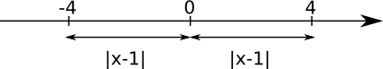

3. Ekvationer och olikheter med absolutbelopp
Vilka tal satisfierar ekvationen \( \mid x-1 \mid =4 \)
Lösning
Vi ser grafiskt på ekvationen.

Per definition är
\( \begin{array}{rcr} x-1 = 4 & \text{ och } & -(x-1)=4\\ \underline{\underline{x=5}} & & x-1=-4 \\ & & \underline{\underline{x=-3}} \\ \end{array} \)
Eller så kan vi lösa ekvationen genom att kvadrera bägge led. Vi kan kvadrera eftersom bägge led är positiva.
\( \begin{array}{rrcll} & \mid x-1 \mid & = & 4 \quad\text{Vi kvadrerar bägge led eftersom de är positiva.} \\ \text{och vi får då att: } & (x-1)^2 & = & 4^2 & \\ & x^2-2x+1 & = & 16 & \\ & x^2-2x-15 & = & 0 & \\ \end{array} \)
Rotformeln ger:
\( \begin{array}{rrcll} & x & = & \dfrac{-(-2)\pm \sqrt{(-2)^2-4\cdot 1 (-15)}}{2\cdot 1}\\ & & = & \dfrac{2\pm \sqrt{64}}{2} \\ \\ & & = & \dfrac{2\pm 8}{2} \\ & x_1 = \dfrac{2+8}{2}=5 & \text{ och } & x_2=\dfrac{2-8}{2}=-3 & \\ \end{array} \)
Vi får alltså samma rötter oberoende om vi arbetar vi definitionen eller om vi kvadrerar.
Exempel 1 För vilka värden på \( x \) gäller att \( \mid x-3 \mid < 7 \)?
Lösning
Vi löser den på två olika sätt.
Vi söker de värden på \( x \) så att avståndet är mindre än 7. Per definitionen kan vi skriva det som dubbelolikheten
\( \begin{array}{cl} -7 < x-3 < 7 & \mid +3 \text{ Vi manipulerar hela olikheten med samma tal}\\ -7+3 < x-3+3 < 7+3 \\ -4 < x < 10 \\ \end{array} \)
Eller så kan vi lösa den genom att kvadrera:
\( \begin{array}{rrcll} & \mid x-3 \mid & < & 7 & \mid (\quad)^2 \quad \text{Bägge led positiva.} \\ & (x-3)^2 & < & 7^2 & \\ & x^2-6x+9 & < & < 49 \\ & x^2-6x-40 & < & 0 \\ \end{array} \)
Vi studerar hur parabeln beter sig genom att lösa nollställena.
\( \begin{array}{rrcll} & x & = & \dfrac{-(-6)\pm \sqrt{(-6)^2-4\cdot 1 (-40)}}{2\cdot 1} \\ \\ & & = & \dfrac{6\pm 14}{2} \\ & x_1 & = & \dfrac{6+14}{2} = 10 \\ & x_2 & = & \dfrac{6-14}{2}= -4 \\ \end{array} \)
Vi har en parabel som öppnar sig uppåt
Svar: \( -4 < x < 10 \)Exempel 2 Bestäm \( \mid 1-x\mid > 3 \).
Lösning
Eftersom avståndet skall vara större än 3 kan vi inte lösa det som en dubbelolikhet. Vi delar upp den i två led:
\( \begin{array}{rclcrcl} 1-x & > & 3 & \text{ och } & -(1-x) & > & 3 \\ -x & > & 2 & & -1+x & > & 3 \\ x & < & -2 & & x & > & 4 \\ \end{array} \)
När vi kombinerar bägge led får vi att \( x < -2 \) eller \( x > 4 \) uppfyller olikheten.
Exempel 3 Lös ekvationen \( \mid 2x-1\mid =\mid x +1 \mid \).
Lösning
Alternativ 1:
Per definition får vi att:
\( \begin{array}{rcl} 2x-1 & = & x+1 \\ x & = & 2 \\ \text{och att: } 2x-1 & = & -(x-1) \\ 2x-1 & = & -x-1 \\ 3x & = & 0 \\ x & = & 0 \\ \end{array} \)
Alternativ 2:
\( \begin{array}{rcll} \mid 2x-1 \mid & = & \mid x+1 \mid & \mid (\quad)^2, \text{Bägge leden positiva.} \\ (2x-1)^2 & = & (x+1)^2 \\ 4x^2-4x+1 & = & x^2+2x+1 \\ 3x^2 -6x & = & 0 \\ 3x(x-2) & = & 0 \\ \text{Nollregeln: } \\ 3x=0 & \text{ eller } & x-2=0 \\ \underline{\underline{x=0}} & & \underline{\underline{x=2}}\\ \end{array} \)
Ekvationer med absolutbelopp på GeoGebra
VIDEO
Exempel 4 För vilka värden på \( x \) gäller att \( \mid x-1 \mid > 2x+1 \)?
Lösning
Alternativ 1:
Vi arbetar med definitionen och då kan vi skriva
\( \mid x-1\mid \left\{ \begin{array}{rl} x-1 & ,\text{ då } x \geq 1 \\ -(x-1) & ,\text{ då } x < 1 \\ \end{array} \right. \)
Vi får att
då \( x \leq 1 \):
\( \begin{array}{rcll} x-1 & > & 2x+1 \\ -x & > & 2 & \mid \cdot(-1) \text{ Riktningen byts!}\\ x & < & -2 & \text{ som inte uppfylls då } x \geq 1 \\ \end{array} \)
då \( x < 1 \) :
\( \begin{array}{rcll} -(x-1) & > & 2x +1 \\ -x+1 & > & 2x+1 \\ -3x & > 0 & \mid /-3 \text{ Riktningen byts!} \\ x & < 0 & \text{som uppfylls.} \end{array} \)
Svar: \( x < 0 \)
Alternativ 2:
Vi kvadrerar fastän bägge led inte är positiva.
\( \begin{array}{rcll} \mid x-1 \mid & > & 2x+1 & \mid (\quad)^2\\ (x-1)^2 & > & (2x+1)^2 \\ x^2-2x+1 & > & & 4x^2+4x+1 \\ -3x^2 -6x & < & 0 \\ \end{array} \)
Nollställen får vi via ekvationen:
\( \begin{array}{rcll} -3x(x+2) & = & 0 \\ -3x=0 & \text{ eller } & x+2=0 \\ x=0 & & x=-2 \\ \end{array} \)
Eftersom bägge led inte var positiva när vi kvadrerade kan vi få in falska rötter. Det som vi gör är att testa rötterna.
\( x=0 \):
\( \begin{array}{rcl} \mid 0-1\mid & = & 2\cdot 0 +1\\ \mid -1 \mid & = & 1 \\ 1 & = & 1 \text{ Stämmer!}\\ \end{array} \)
\( x=-2 \):
\( \begin{array}{rcl} \mid -2-1 \mid & = & 2(-2)+1 \\ \mid -3 \mid & = & -4+1 \\ 3 & = & -3 \text{ Som inte stämmer!} \end{array} \)
Vi har en parabel som öppnar sig neråt, \( -3x^2-6x \), med endast en rot, \( x=0 \) och utrycket är positivt då \( x < 0 \).
Olikheter på GeoGebra
VIDEO
Uppgifter
- Lös ekvationerna
- \( \mid x+1 \mid =5 \)
\( \mid x+1 \mid =5 \) betyder att \( x+1=5 \Leftrightarrow x=4 \) och \( -(x+1)=5 \Leftrightarrow x=-6 \).
- \( \mid2x-1 \mid =1 \)
\( \mid2x-1 \mid =1 \) ger att \( 2x-1=1 \Leftrightarrow x=1 \) och \( -(2x-1)=1 \Leftrightarrow x=0 \).
- \( \mid \dfrac{1}{2}x-2 \mid =3 \)
\( \mid \dfrac{1}{2}x-2 \mid =3 \) betyder att \( \dfrac{1}{2}x-2=3 \Leftrightarrow x=10 \) och \( -(\dfrac{1}{2}x-2)=3 \Leftrightarrow x=-2 \).
- \( \mid x+1 \mid =5 \)
- Lös ekvationerna
- \( \mid x+1\mid = x-1 \)
\( \mid x+1 \mid =x-1 \) kan vi skriva som \( x+1 = x-1 \) som saknar rötter och \( -(x+1)=x-1 \Leftrightarrow x=0 \).
- \( \mid 3x-4 \mid = \mid x \mid \)
\( \mid 3x-4\mid = \mid x \mid \) löser vi genom att kvadrera.
\( \mid 3x-4\mid^2 = \mid x \mid^2 \Leftrightarrow (3x-4)^2 = (x)^2 \) som har rötterna 1 och 2.
- \( x=2\mid x-3 \mid \)
För \( x=2\mid x-3 \mid \) gäller att \( x-3 > 0 \Leftrightarrow x > 3 \).
Vi arbetar med definitionen: \( x=2(x-3) \Leftrightarrow x=6 \) och \( x=2\cdot-(x-3) \Leftrightarrow x=3 \).
- \( \mid x+1\mid = x-1 \)
- Lös olikheterna
- \( \mid x +1 \mid < 5 \)
\( \mid x +1 \mid < 5 \Leftrightarrow -5 < x+1 < 5 \Leftrightarrow -6 < x < 4 \)
- \( \mid 1-x\mid > 7 \)
\( \mid 1-x \mid > 7 \) betyder att \( 1-x > 7 \Leftrightarrow x < -6" \) och att \( -(1-x) > 7 \Leftrightarrow x > 8 \).
- \( \mid 2x-1\mid < 2 \)
\( \mid 2x -1 \mid 2 \) betyder att \( -2 < 2x-1<2 \Leftrightarrow -\dfrac{1}{2}
- \( \mid x +1 \mid < 5 \)
- Lös ekvationerna
- \( \mid x+1\mid = \mid x-1\mid \)
Eftersom \( \mid x+1\mid = \mid x-1\mid \) är positiva kan vi kvadrera. Vi får \( \mid x+1 \mid^2 = \mid x-1\mid^2 \Leftrightarrow x=0 \).
- \( \mid 2x \mid = x-2 \)
\( \mid 2x \mid \) ger att \( x > 0 \) och \( x-2 > 0 \) ger att \( x > 2 \), alltså \( x > 2 \).
Sedan arbetar vi med definitionen: \( 2x=x-1 \Leftrightarrow x=-2 \) och \( -2x=x-2 \Leftrightarrow x=\dfrac{2}{3} \). Bägge talen är mindre än 2 så ekvationen saknar lösningar.
- \( \mid x+1\mid = \mid x-1\mid \)
- Lös ekvationen \( x^2-4x+4 = \mid 2x-1 \mid \)
Vi har att \( 2x-1 > 0 \Leftrightarrow x > \dfrac{1}{2} \).
Definitionen ger att \( x^2-4x+4 = 2x -1 \Leftrightarrow x=5 \) eller \( x=1 \) och att \( x^2-4x+4=-(2x-1) \) saknar reella rötter.
Våra rötter är alltså 1 och 5.
- Lös olikheten \( \mid x^2-x-4 \mid < 2 \)
\( \mid x^2-x-4 \mid < 2 \) betyder att \( x^2-x-4 < 2 \) och att \( x^2-x-4 < -2 \). För att lösa dessa olikheter löser vi ekvationerna \( x^2-x-4=2 \) som har nollställena \( 2 \) och \( 3 \) och \( x^2-x-4=-2 \) som har nollställena \( -2 \) och \( 1 \). När vi analyserar tecknen för paralberna får vi att \( -2 < x < 1 \) och \( 2< x < 3 \).
- Bestäm för vilka värden på x gäller att \( \mid 2x-4\mid < x-2 \).
Vi har att \( 2x-4 > 0 \Leftrightarrow x > 2 \). Absolutbeloppet delar vi upp enligt definitionen.
\( \mid 2x-4 \mid = \left\{ \begin{array}{ll} 2x - 4 & , \text{då } x \geq 2 \\ -(2x-4) & , \text{då } x < 2 \\ \end{array} \right. \)
Vi delar upp i två fall
Då \( x \geq 2 \) får vi \( 2x-4 < x-2 \) som har lösningen \( x < 2 \). Kriteriet är att \( x \geq 2 \), lösningen duger inte.
Och fallet då \( x < 2 \). Då har vi \( -(2x-4) < x-2 \) som har lösningen \( x > 2 \). Kriteriet är \( x < 2 \), lösningen duger inte.
Olikheten saknar lösningar.